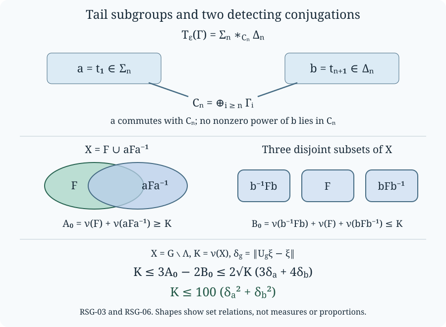

Residual subgroups and uniform group-factor estimates
Two conjugations can detect the distance from a group von Neumann algebra to a tail subgroup algebra. The useful feature is a bound that does not grow with the number of factors in a finite product. We construct the groups, prove their embeddings and infinite conjugacy classes, and derive that bound from an explicit covering and disjointness argument.
We use the normal-form theorem and its reduced-word corollary in The manifold and its fundamental group, Section 3. Only that algebraic section is needed. The trace, Fourier coordinates, separable predual and finite-factor alternative are proved in Central-sequence foundations, FG1. All groups below are discrete. Countability is required when we assert a separable predual.
The constructions and the constant \(100\) occur in Boutonnet, Chifan and Ioana, II₁ factors with non-isomorphic ultrapowers, Sections 1.1 and 2.3. We give the required arguments here. Distinguishing the factors attached to different infinite binary sequences requires further invariants; their nonisomorphism is not a conclusion of this lesson.
Subgroup embeddings in an amalgam
Let \(H_0\) embed in \(H_1,H_2\), and put \(G=H_1*_{H_0}H_2\). A reduced word has alternating syllables from \(H_1\setminus H_0\) and \(H_2\setminus H_0\), with an optional initial coefficient in \(H_0\). The normal-form theorem implies that a word with at least one such syllable is outside \(H_0\). Its number of syllables and the factor containing its first syllable are determined by its element of \(G\). Multiplying a syllable by an element of \(H_0\) does not change its factor or make it belong to \(H_0\).
Lemma. Suppose \(K_i\leq H_i\) and
\[ K_1\cap H_0=K_2\cap H_0=L. \tag{RSG.1} \]The natural homomorphism \(K_1*_{L}K_2\to G\) is injective, and its image intersects \(H_i\) in exactly \(K_i\).
Proof. A nonidentity element of the smaller amalgam is either a nonidentity element of \(L\), or has a reduced expression with alternating syllables in \(K_i\setminus L\). The first remains nonidentity in \(H_0\). In the second case each syllable is outside \(H_0\) by (RSG.1); the expression therefore remains reduced in the larger amalgam and cannot represent the identity. For the intersection assertion, a reduced expression with two or more syllables is in neither \(H_i\), because elements of a single factor have normal forms of length at most one. A one-syllable expression belongs to the factor of that syllable, and hence, if it belongs to \(H_i\), is in \(K_i\). A zero-syllable expression is in \(L\subseteq K_i\). This proves both assertions. \(\square\)
We will repeatedly attach a new infinite cyclic group \(\langle t\rangle\) to a group \(H\), requiring it to commute with a specified subgroup \(C\leq H\). The resulting group is
\[ H*_{C}\bigl(C\times\langle t\rangle\bigr). \tag{RSG.2} \]Indeed its presentation adds precisely the relations \([t,c]=1\), \(c\in C\), to those of \(H\) and the infinite cyclic group. The normal-form theorem makes both displayed factors injective. In particular adding these relations in this manner does not collapse any element of \(H\).
Tail groups, functorial embeddings and conjugacy classes
For a group \(\Gamma\), let \(\Gamma_i\) be its copy at coordinate \(i\geq1\). Define
\[ B_0(\Gamma)=\bigoplus_{i\geq1}\Gamma_i, \qquad B_1(\Gamma)=B_0(\Gamma)\rtimes S_\infty, \qquad C_j(\Gamma)=\bigoplus_{i\geq j}\Gamma_i, \tag{RSG.3} \]where the direct sum consists of the finite-support tuples and \(S_\infty\) consists of the finite-support permutations of the positive integers. The action permutes coordinates. Thus \((g,\sigma)(h,\tau)=(g\,\sigma(h),\sigma\tau)\), which specifies the semidirect product and embeds each \(C_j\) as a subgroup of its base.
For \(\varepsilon\in\{0,1\}\), start with \(H_{\varepsilon,0}=B_\varepsilon(\Gamma)\) and set
\[ H_{\varepsilon,j} =H_{\varepsilon,j-1}*_{C_j(\Gamma)} \bigl(C_j(\Gamma)\times\langle t_j\rangle\bigr), \qquad T_\varepsilon(\Gamma)=\bigcup_{j\geq0}H_{\varepsilon,j}. \tag{RSG.4} \]The union uses the injective maps proved in RSG-01. Consequently it has exactly the presentation
\[ T_\varepsilon(\Gamma) =\langle B_\varepsilon(\Gamma),t_1,t_2,\ldots \mid[t_j,\Gamma_i]=1\text{ whenever }i\geq j\rangle. \tag{RSG.5} \]There are no additional relations: maps out of either construction are precisely the maps out of the base and the cyclic groups satisfying the displayed commutations. These identical universal properties give inverse homomorphisms fixing every generator.
Proposition. A subgroup inclusion \(\Sigma\leq\Gamma\) induces an injection \(T_\varepsilon(\Sigma)\to T_\varepsilon(\Gamma)\). At every finite attachment stage the smaller group intersects the larger base \(B_\varepsilon(\Gamma)\) in \(B_\varepsilon(\Sigma)\).
Proof. The assertion holds for the bases, including the semidirect products. Their intersection with \(C_j(\Gamma)\) is \(C_j(\Sigma)\). Suppose it holds through stage \(j-1\). The smaller previous stage then intersects the amalgamating subgroup \(C_j(\Gamma)\), which is in the base, in \(C_j(\Sigma)\). In the new right-hand factor the subgroup \(C_j(\Sigma)\times\langle t_j\rangle\) also intersects \(C_j(\Gamma)\) in \(C_j(\Sigma)\). RSG-01 embeds the smaller amalgam and says that its intersection with the larger previous stage is precisely the smaller previous stage. Intersecting once more with the base proves the induction assertion. Taking unions proves the proposition. \(\square\)
In particular the map \(\Gamma\to\Gamma_1\to T_\varepsilon(\Gamma)\) is injective. These maps are natural: an inclusion of input groups commutes with the coordinate-one inclusions. The construction also commutes with increasing unions of groups. To see this, each element of \(T_\varepsilon(\bigcup_n\Gamma^{(n)})\) is represented by a finite word. Its finitely many group coordinates all lie in some \(\Gamma^{(n)}\); its permutation and cyclic generators are already present at every input stage. The subgroup injections just proved identify the union of the smaller constructions with the whole group.
Proposition. Each \(T_\varepsilon(\Gamma)\) is infinite and has infinite conjugacy classes outside the identity. It is countable if \(\Gamma\) is countable.
Proof. Let \(B_{0,n}=\bigoplus_{i=1}^n\Gamma_i\) and \(B_{1,n}=B_{0,n}\rtimes S_n\). Starting with \(B_{\varepsilon,n}\), attach \(t_1,\ldots,t_n\) using the finite subgroups \(C_j\cap B_{\varepsilon,n}=\bigoplus_{i=j}^n\Gamma_i\). Call the resulting group \(K_n\). The same induction using RSG-01 embeds it in \(H_{\varepsilon,n}\), with
\[ K_n\cap B_\varepsilon(\Gamma)=B_{\varepsilon,n}. \tag{RSG.6} \]The images of the \(K_n\) form an increasing union equal to \(T_\varepsilon(\Gamma)\): every word has finite coordinate, permutation and cyclic-generator support, and increasing \(n\) includes all of that support.
Since \(B_{\varepsilon,n}\cap C_{n+1}=\{1\}\), (RSG.6) gives \(K_n\cap C_{n+1}=\{1\}\). At the next attachment RSG-01 therefore embeds
\[ K_n*\langle t_{n+1}\rangle \quad\hbox{in}\quad T_\varepsilon(\Gamma). \tag{RSG.7} \]If \(1\ne g\in K_n\), the conjugates \(t_{n+1}^m g t_{n+1}^{-m}\), \(m\geq1\), are pairwise distinct. Equality for two different exponents would give the identity as the reduced nonempty word \(g^{-1}t_{n+1}^kgt_{n+1}^{-k}\), \(k\ne0\), in (RSG.7). Every nonidentity element lies in some \(K_n\), proving the conjugacy assertion. The infinite cyclic subgroup already proves infinitude, even when \(\Gamma\) is trivial. Finally a countable set of generators has countably many finite words, so all the groups in question are countable when the input is. \(\square\)
Killing the base in (RSG.5) gives a retraction onto the free group on the \(t_j\). Conversely those generators define a homomorphism from that free group into \(T_\varepsilon(\Gamma)\); the composite with the retraction is the identity, so the homomorphism is injective. This supplies explicit free subgroups without any assumption on \(\Gamma\).
Strongly residual tails
Definition. A subgroup \(\Lambda\leq G\) is strongly residual if there are \(a,b\in G\) and \(F\subseteq G\setminus\Lambda\) such that
\[ \begin{gathered} a\Lambda a^{-1}=\Lambda,\qquad F\cup aFa^{-1}=G\setminus\Lambda,\\ \{b^jFb^{-j}:j\in\mathbb Z\}\text{ are pairwise disjoint},\\ b^jFb^{-j}\subseteq G\setminus\Lambda\quad(j\in\mathbb Z). \end{gathered} \tag{RSG.8} \]The two sets in the middle condition are allowed to overlap. The element \(b\) is not assumed to normalize \(\Lambda\).
Lemma. In an amalgam \(G=H_1*_{H_0}H_2\), suppose \(a\in H_1\setminus H_0\) normalizes \(H_0\) and \(b\in H_2\) satisfies \(b^j\notin H_0\) for every nonzero integer \(j\). Then \(H_0\) is strongly residual.
Proof. Let \(F\) consist of the reduced words outside \(H_0\) whose first syllable has type \(H_1\). This is a well-defined condition by normal-form uniqueness. Any initial \(H_0\)-coefficient can be absorbed into the first syllable.
If \(w\notin H_0\cup F\), its first syllable has type \(H_2\). The product \(a^{-1}wa\) starts with the two syllables \(a^{-1}\) and that first syllable. Right multiplication by \(a\) can combine with the last syllable of \(w\), if that syllable has type \(H_1\), but can delete at most that syllable; the surviving initial \(H_2\)-syllable cannot disappear. The product therefore starts in \(H_1\setminus H_0\) and belongs to \(F\). This proves the covering condition; normalization makes \(aFa^{-1}\) a subset of the complement.
For \(j\ne0\) and \(f\in F\), the same endpoint reduction shows that \(b^jfb^{-j}\) starts with a surviving \(H_2\)-syllable followed by an \(H_1\)-syllable. It is outside both \(H_0\) and \(F\). Hence \(F\cap b^jFb^{-j}=\varnothing\). If \(b^rFb^{-r}\) and \(b^sFb^{-s}\) intersected for \(r\ne s\), conjugating the intersection by \(b^{-r}\) would contradict this last assertion with \(j=s-r\). All three conditions follow. \(\square\)
Proposition. For every \(n\geq1\), the subgroup \(C_n(\Gamma)\) is strongly residual in \(T_\varepsilon(\Gamma)\).
Proof. Let \(\Sigma_n=H_{\varepsilon,n}\). Independently start with \(C_n\) and attach \(t_{n+1},t_{n+2},\ldots\), commuting \(t_j\) with \(C_j\subseteq C_n\); denote that group by \(\Delta_n\). The same amalgam construction embeds \(C_n\) in \(\Delta_n\). There is a canonical isomorphism
\[ T_\varepsilon(\Gamma)=\Sigma_n*_{C_n}\Delta_n. \tag{RSG.9} \]Indeed the presentation on the right contains the base and all \(t_j\); the first \(n\) commutation relations are imposed in \(\Sigma_n\), and all the remaining ones in \(\Delta_n\). These are exactly (RSG.5), so the homomorphisms fixing the generators in both directions are inverse. In particular (RSG.9) also proves the asserted inclusions of its factors.
Choose \(a=t_1\) and \(b=t_{n+1}\). The element \(a\) commutes with \(C_n\subseteq C_1\), and \(a\notin C_n\); also no nonzero power of \(b\) belongs to \(C_n\). These nonmembership assertions follow, for example, from the retraction killing the base and retaining the free cyclic generators. Apply the lemma. \(\square\)

The upper diagram is the exact amalgam (RSG.9). Below it, the two-piece cover may overlap, whereas the three displayed translates are disjoint. Their masses give the inequalities in RSG-06. The shapes depict set relations, not measures or proportions.
Finite products without a growing constant
Proposition. If \(\Lambda_i\leq G_i\) is strongly residual for \(1\leq i\leq t\), then \(\Lambda=\prod_i\Lambda_i\) is strongly residual in \(G=\prod_iG_i\).
Proof. Choose witnesses \(a_i,b_i,F_i\) and put \(a=(a_i)\), \(b=(b_i)\). Define
\[ F=\{(g_i):\text{ for some }j, \ g_i\in\Lambda_i\ (i<j),\quad g_j\in F_j\}. \tag{RSG.10} \]Every member of \(F\) is outside \(\Lambda\). The element \(a\) normalizes \(\Lambda\). If \(g\notin\Lambda\), let \(j\) be its first coordinate outside \(\Lambda_j\). The cover in that coordinate puts \(g_j\) in \(F_j\) or \(a_jF_ja_j^{-1}\). In the first case \(g\in F\). In the second, conjugation by \(a^{-1}\) preserves all preceding memberships and puts the \(j\)-th coordinate in \(F_j\), so \(g\in aFa^{-1}\).
Every conjugate \(b^kFb^{-k}\) is outside \(\Lambda\): a witnessing coordinate \(j\) of an element of \(F\) is carried into \(b_j^kF_jb_j^{-k}\subseteq G_j\setminus\Lambda_j\). To prove disjointness it suffices to prove \(F\cap b^kFb^{-k}=\varnothing\) for \(k\ne0\). Suppose instead \(f=b^kgb^{-k}\) with \(f,g\in F\), and let \(i,j\) be their respective first coordinates outside the subgroups. At these coordinates \(f_i\in F_i\) and \(g_j\in F_j\).
If \(i<j\), then \(g_i\in\Lambda_i\), whereas \(g_i=b_i^{-k}f_ib_i^k\in b_i^{-k}F_ib_i^k\), a contradiction. If \(j<i\), then \(f_j\in\Lambda_j\), whereas \(f_j=b_j^kg_jb_j^{-k}\in b_j^kF_jb_j^{-k}\), again a contradiction. Finally, if \(i=j\), then \(f_i\in F_i\cap b_i^kF_ib_i^{-k}\), contradicting disjointness in that coordinate. This covers all cases without assuming that \(b_i\) normalizes \(\Lambda_i\). Conjugating any proposed intersection of two different translates reduces it to the case just excluded. \(\square\)
Fourier restriction is a conditional expectation
For a countable group \(G\), let \(\lambda_g\delta_h=\delta_{gh}\) on \(\ell^2(G)\), let \(L(G)=\lambda(G)''\), and use its faithful normal trace \(\tau_G(x)=\langle\delta_e,x\delta_e\rangle\). Write \(\|x\|_2=\tau_G(x^*x)^{1/2}\) and \(\widehat x(g)=\langle\delta_g,x\delta_e\rangle\). The existence, faithfulness and traciality of this trace are the FG1 results specified above; in particular
\[ \|x\|_2^2=\sum_{g\in G}|\widehat x(g)|^2. \tag{RSG.11} \]Proposition. For every subgroup \(\Lambda\leq G\), there is a normal, positive, unital, trace-preserving \(L(\Lambda)\)-bimodule projection \(E_\Lambda:L(G)\to L(\Lambda)\), and
\[ \widehat{E_\Lambda x}(g)=1_\Lambda(g)\widehat x(g), \qquad \|x-E_\Lambda x\|_2^2 =\sum_{g\notin\Lambda}|\widehat x(g)|^2. \tag{RSG.12} \]Proof. First identify the subgroup algebra inside \(L(G)\). The decomposition \(G=\bigsqcup_r\Lambda r\) gives an orthogonal decomposition of \(\ell^2(G)\) into copies of \(\ell^2(\Lambda)\). On each copy \(\lambda_h\), \(h\in\Lambda\), acts by its left regular representation. Thus the diagonal amplification of \(L(\Lambda)\) is precisely the von Neumann algebra generated by those unitaries on \(\ell^2(G)\). It is injective and normal: its matrix coefficients are sums of the coefficients of the individual copies, with absolutely summable bounds from Cauchy–Schwarz. Finite partial sums and their tails establish preservation of increasing bounded positive limits. Conversely restriction to any one copy recovers the original operator. We henceforth use this identification.
Let \(e_\Lambda\) be the projection onto \(\ell^2(\Lambda)\). Compression satisfies
\[ e_\Lambda\lambda_g|_{\ell^2(\Lambda)} =\begin{cases}\lambda_g^{\Lambda},&g\in\Lambda,\\0,&g\notin\Lambda.\end{cases} \tag{RSG.13} \]The bounded strong density proved in FG1 supplies uniformly bounded group-algebra approximants to each \(x\in L(G)\): first approximate in the norm-closed group algebra and then approximate each of those elements by a polynomial with arbitrarily small norm error. Compression is weak-operator continuous, and \(L(\Lambda)\) is weak-operator closed. Therefore \(e_\Lambda x|_{\ell^2(\Lambda)}\in L(\Lambda)\). Define \(E_\Lambda x\) to be the embedded operator represented by this compression.
Compression is positive, unital and contractive. For an increasing bounded positive net, its quadratic forms converge to those of the compressed supremum; thus it is normal. The embedding just described preserves these properties. It fixes the subgroup algebra. Since that algebra reduces \(\ell^2(\Lambda)\), compression of \(y x z\) is the product of the compressions for \(y,z\in L(\Lambda)\), giving bimodularity. The identity vector belongs to the compressed subspace, so its vector state gives \(\tau_G(E_\Lambda x)=\tau_G(x)\). Finally the compressed column at \(\delta_e\) retains precisely the coordinates in \(\Lambda\); the embedded operator has zero other coordinates in that column. This proves both identities in (RSG.12). \(\square\)
On the Hilbert completion of \(L(G)\) in \(\|\cdot\|_2\), this expectation is the orthogonal coordinate projection onto \(\ell^2(\Lambda)\). The completion is all of \(\ell^2(G)\), since the group unitaries supply every finitely supported vector.
The exact residual estimate
For a Hilbert space \(V\), let \(\ell^2(G;V)\) be the square-summable \(V\)-valued families and define the conjugation permutation
\[ (U_g\xi)(h)=\xi(g^{-1}hg),\qquad (P_\Lambda\xi)(h)=1_\Lambda(h)\xi(h). \tag{RSG.14} \]The usual finite-sum inner product and coordinate limits prove completeness; permutations preserve that inner product, so \(U_g\) is unitary.
Theorem. If \(a,b,F\) witness strong residuality of \(\Lambda\leq G\), then, for every \(\xi\in\ell^2(G;V)\),
\[ \|(1-P_\Lambda)\xi\|^2 \leq100\bigl(\|U_a\xi-\xi\|^2+\|U_b\xi-\xi\|^2\bigr). \tag{RSG.15} \]In particular, for every \(x\in L(G)\),
\[ \|x-E_\Lambda x\|_2^2 \leq100\bigl(\|[\lambda_a,x]\|_2^2 +\|[\lambda_b,x]\|_2^2\bigr). \tag{RSG.16} \]Proof. Put \(\nu(A)=\sum_{h\in A}\|\xi(h)\|^2\), \(K=\nu(G\setminus\Lambda)\), and \(\delta_g=\|U_g\xi-\xi\|\). Factoring a difference of squared norms, using the reverse triangle inequality, and then applying Cauchy–Schwarz to the sums gives
\[ |\nu(gAg^{-1})-\nu(A)| \leq\bigl(\sqrt{\nu(gAg^{-1})}+\sqrt{\nu(A)}\bigr)\delta_g. \tag{RSG.17} \]Indeed the second square-sum factor is at most \(\bigl(\sum_h\|\xi(ghg^{-1})-\xi(h)\|^2\bigr)^{1/2}=\delta_g\); the first is bounded by the sum of the two square-sum norms. Finite partial sums justify the inequality for the full summable families. Unitarity gives \(\delta_{b^{-1}}=\delta_b\).
Set
\[ A_0=\nu(F)+\nu(aFa^{-1}),\qquad B_0=\nu(F)+\nu(bFb^{-1})+\nu(b^{-1}Fb). \tag{RSG.18} \]The cover gives \(A_0\geq K\), and the disjoint translates give \(B_0\leq K\). All their sets lie in the complement of \(\Lambda\), so (RSG.17) bounds each difference from \(\nu(F)\) by \(2\sqrt K\) times the appropriate \(\delta\). Consequently
\[ \begin{aligned} K&\leq3A_0-2B_0\\ &=3\bigl(\nu(aFa^{-1})-\nu(F)\bigr)\\ &\quad-2\bigl(\nu(bFb^{-1})-\nu(F)\bigr) -2\bigl(\nu(b^{-1}Fb)-\nu(F)\bigr)\\ &\leq2\sqrt K\,(3\delta_a+4\delta_b)\\ &\leq10\sqrt K\,(\delta_a^2+\delta_b^2)^{1/2}. \end{aligned} \tag{RSG.19} \]The last step uses \(3^2+4^2=25\). If \(K=0\) the theorem is immediate. Otherwise divide by \(\sqrt K\) and square, proving (RSG.15).
For the scalar coefficient vector of \(x\in L(G)\), traciality gives \(\widehat{\lambda_gx\lambda_g^*}(h)=\widehat x(g^{-1}hg)\). Right multiplication by \(\lambda_g^*\) preserves the trace norm; hence \(\delta_g=\|\lambda_gx\lambda_g^*-x\|_2=\|[\lambda_g,x]\|_2\). Now (RSG.12) identifies \(K\) with the left side of (RSG.16). \(\square\)
Uniform tail estimates and the factor construction
Fix a countable \(\Gamma\), \(\varepsilon\in\{0,1\}\), and integers \(n,t\geq1\). Let
\[ \begin{gathered} G=T_\varepsilon(\Gamma)^t,\qquad \Lambda=C_n(\Gamma)^t,\\ a=(t_1,\ldots,t_1),\qquad b=(t_{n+1},\ldots,t_{n+1}). \end{gathered} \tag{RSG.20} \]By RSG-03 and RSG-04 these are witnesses for strong residuality. RSG-06 therefore proves (RSG.16) for this inclusion with the same constant \(100\), independently of \(n\) and \(t\). Its Hilbert-valued version is independent of the auxiliary Hilbert space as well.
The usual tensor notation for this result has a direct justification. The map \(\delta_{(g_1,\ldots,g_t)}\mapsto\delta_{g_1}\otimes\cdots\otimes\delta_{g_t}\) preserves inner products on the finite linear combinations and has dense image, so it extends to a unitary. It carries the regular representation of the product group to the products of the coordinate regular representations. Taking the von Neumann algebras they generate gives
\[ L(G)=L(T_\varepsilon(\Gamma))^{\bar\otimes t}, \qquad L(\Lambda)=L(C_n(\Gamma))^{\bar\otimes t}. \tag{RSG.21} \]The identity vector is the tensor of the identity vectors, so the trace on elementary tensors is the product trace. Thus (RSG.16) is precisely a uniform distance estimate for these tensor powers.
Finally let \(\alpha=(\alpha_1,\alpha_2,\ldots)\) be an infinite binary sequence. For a finite prefix put
\[ G_{\alpha|k} =T_{\alpha_1}\bigl(T_{\alpha_2}(\cdots T_{\alpha_k}(\Gamma)\cdots)\bigr). \tag{RSG.22} \]The coordinate-one map \(\Gamma\to T_{\alpha_{k+1}}(\Gamma)\), followed by the already proved functorial embeddings for the outer operations, embeds \(G_{\alpha|k}\) in \(G_{\alpha|k+1}\). Define \(G_\alpha\) as their increasing union. Each nonidentity element lies in a finite prefix group, where its conjugacy class is infinite by RSG-02; injectivity preserves those distinct conjugates in the union. The union is countable and infinite. FG1 therefore proves that
\[ M_\alpha(\Gamma)=L(G_\alpha) \tag{RSG.23} \]is a type \(\mathrm{II}_1\) factor with a faithful normal tracial state and separable predual. The same conclusion holds for every nonempty finite prefix. Commutation of the functors with increasing unions also identifies \(G_\alpha\) with \(T_{\alpha_1}(G_{(\alpha_2,\alpha_3,\ldots)})\), using the embeddings above. These statements construct the factors and their tail estimates; they do not yet separate their isomorphism classes.